受中华文明的无穷魅力 ！ 成金术] ， 轻轻松松创造无线财富，快快乐乐感 漏]不再陷阱重重，你也可以掌握传说中的[点石 我们坚信，有了亿云收藏的专业指导，[捡 成绩。 领域，藏品拍卖领域，公益消费领域获得不菲的 业内多个专业机构组织合作，成功的在电子商务 位亚太级、国家级、省级工艺大师签约，并与行 实力雄厚，理念先进的专业团队，先后与50多 品收藏交流、销售交易的专业型公司，公司拥有 浙江亿云艺术品有限公司，是一家从事艺术 与进步。 与人的全面交融，促进优秀中华文化的不断发掘 家之博学，助藏友之雅玩，促进人与文化、文化 与众位藏友们一起，精诚一致，通力合作，会名 化的朝圣之旅，必定充满着坎坷与荆棘，亿云愿 沉淀，更是对这种文化美的探求与追寻。一段文 收藏的魅力在于其所蕴含的厚重的中华文化
云
·
公
司
简
介
- 浙江元森红木鉴定评估中心
- 北京林业大学
- 浙江省红木产业协会
- 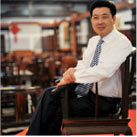
- 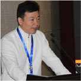
- 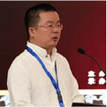
浙江元森红木鉴定评估中心是一家服务于众多红木企业，家具企业， 和广大消费者的平台中心，中心拥有多名高级木材鉴定师，家具鉴定师， 实力雄厚，经验丰富，成立以来本着公平公正，严谨细致的精神， 浙江省元森红木鉴定评估中心已经成为了全国为数不多的专业鉴定机构， 每年的鉴定作品数量达到数十万件，并成为中国最大的电商平台阿里巴巴 和淘宝网的合作伙伴，为其平台上数以万计的产品做出放心满意的鉴定结果。
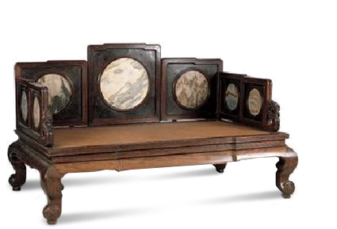
- 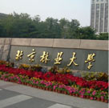

北京林业大学（Beijing Forestry University）简称北林，位列国家“211工程”，入选“985工程优势学科创新平台”、 “卓越农林人才教育培养计划”、“2011计划”，北京高科大学联盟成员[1] ，设有研究生院，是教育部直属、 教育部与国家林业局共建的以林学、生物学、林业工程学为特色的全国重点大学。 北京林业大学办学历史可追溯至1902年的京师大学堂农业科林学目。1952年，北京农业大学森林系与河北农 学院森林系合并，成立北京林学院。1956年，北京农业大学造园系和清华大学建筑系部分并入学校。1981年， 成为首批具有博士、硕士学位授予权的高校。1985年，更名为北京林业大学。1996年，被国家列为首批“211工程”重点 建设的高校。2000年，经教育部批准试办研究生院；2004年，正式建立研究生院。2005年，获得本科自主选拔录取资格。 2008年，学校成为国家“优势学科创新平台”建设项目试点高校。2010年，再获教育部和国家林业局共建支持。 2012年，牵头成立中国第一个林业协同创新中心——“林木资源高效培育与利用”协同创新中心。
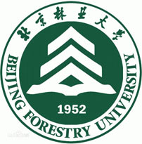浙江省红木产业协会是由浙江省经济和信息化委员会主管，经浙江省民政厅批准，是浙江红木产业唯 一由企业自发组织成立的开放性、自律型、服务型省级社团组织。在有效融合全省红木产业链、对接其他 省级红木协会组织、促进行业的整体发展、树立浙江省红木产业的整体品牌上，将发挥不可替代的作用。 协会以“携手合作 共求发展”为口号，以“为产业服务、为会员服务、为发展经济建设服务”为基本方针。 浙江省红木产业协会即将通过省经信委和民政厅双轨直达省委、省政府的沟通渠道，与浙江各级部门协同制 定产业政策，组织开展浙江红木工艺设计大师评定体系；组建浙江红木产业研究院，汇集中国乃至世界红木家 具产业链上的优秀专家、品牌机构、高等院校等，深入研究发展案例，深化官-产-商-学-研互动运作机制建设， 为浙江红木实现“浙江创造”就地即时提供咨询服务；调研全国和全省红木行业发展方向，编辑专业刊物，发布市场信 息；组织产业展览展销等服务。协会通过凝聚浙江最具实力和代表性的知名企业力量，致力于“浙作红木”大品牌、大形 象的维护和推广，致力规范行业标准以及提升行业整体竞争力，促进浙江红木品牌升级。 协会的业务范围主要是调研全国和全省红木行业发展方向，制定本省行业发展规划，组织行业企业开展生产 、经营、管理、科研、质量、设计及设计师考评，发布市场信息，编辑专业刊物，开展行业调查、培训、交流、咨询、展览展销等服务。
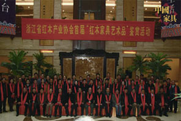- 一点公益成立背景
- 互联网+公益
- 一点公益四化
- 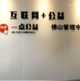
- 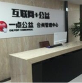
- 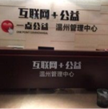
- 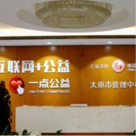
- 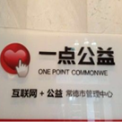
根据中国光华科技基金会会通字[2016]4号文件的精神，为了积极探索创新的“互联网+公益”运作模式， 中国光华科技基金会联合深圳前海中盛一点科技有限公司合作开展一点公益项目；并于2016年9月专项成立“北京一点公益基金会”， 按照民政部和财政部的各项规定，对加入一点公益商业联盟的商家及消费者的捐款进行专账管理。“北京一点公益基金会”募集捐款 用于资助开展一点公益项目，包括资助中青年专家科技成果中试熟化及服务建设、资助青年创新创业公益项目、资助青少年国际交流、 资助健康养老公益项目、资助一点公益中国行（包括基金会现有公益项目组合）、开展相关奖励以及其他符合法律法规的和北京一点 公益基金会使命宗旨的公益项目。一点公益项目所得的捐赠资金的使用将严格遵守 《中华人民共和国公益事业捐赠法》、国务院《基金会管理条例》等法律法规，以及《北京一点公益基金会项目管理办法》的规定， 专款专用，专项管理，并接受相关部门的业务管理和财务审计及捐赠人的监督。
- 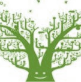
- 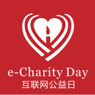
随着市场经济和互联网的飞速发展，除了现实世界中的多种公益组织外，网络公益作为一种新型的公益媒介， 将是一种更简单，更有效，更规范的公益形式。一点公益让每一位消费者在日常的实体消费中参与到公益事业中， 自愿自发，在参与公益行为中累积荣誉，并获得激励，一种创新的公益形式正在逐步形成。 一点公益倡导“以商业服务促进公益发展”。让参与一点公益平台的用户在自己的能力范围内参与公益，在消费 的过程中奉献点滴爱心。互联网科技让用户的消费全程保持公开、透明。一样的付出，不一样的收获，是消费者参与公益， 继承民族传统美德，弘扬仁爱之心，共同构建有情有爱的和谐社会的支持。 花该花的钱，奉献不一样的公益！
公益全民化：公益，不仅只是施与，而是参与！公益的意义并非只是辅助弱势群体，其更大意义在于创造全民幸福感，
参与感，传播正念，正行，正能量！参与公益应可持续，可监管，有足够公信力，有更大受益群体及参与群体。
真正的公益是自主自发的，是全民参与、全民受益的；一点公益通过互联网，
让市民轻松注册成为一点公益的公益信使，通过互联网平台共同传播正能量，共同关注公益事业，共同监督公益事业，共同参与公益事业。
公益系统化：一点公益培养大量专业的公益人士，共同参与公益事业。通过专业的公益团队，运用高科技互联网技
术进行公益事业的推动及监督，开办“公益大学”，创办“公益传媒”等；让公益事业能有序系统的展开。
公益痕迹化：捐助者的捐赠，都将直接进入北京一点公益基金会作为专项基金，捐助资金的使用将严格遵守《中华人民共和国公益事业捐赠法》、
国务院《基金会管理条例》等法律法规，以及《北京一点公益基金管理办法》的规定，专款专用，专项管理，
并接受各个相关机构业务管理和财务审计及捐赠人的监督。让捐赠者通过互联网的每一笔捐赠都有迹可循，通过一点公益互联网平台，随时跟踪捐赠的流向及用途。
公益持续化：一点公益将赠送出公益激励信使豆给每一位公益捐赠者，让每一位参与了公益事业的捐赠者都在参与公益事业后得到激励，让履行公益的爱心人
士能持续参与公益，持续获得激励，使公益事业生生不息。
- “全民化”让公益人人参与
- “系统化”让公益规范管理
- “痕迹化”让公益有迹可循
- “持续化”让公益践行永续
- 大师汇成立背景
- 大师汇优势
传统行业的严峻形势
当下，传统行业面临各种难题迫使他们开始寻找转型新出路。同时，互联网的普及有效激发了互联网时代人人创业的热情。个体劳动者的时代来临
互联网时代，更多劳动者需要新的机会，因此创新、创业成为年轻一代的首选。创业不再是梦，移动互联是年轻人最强的装备， 生活就是创业，创业就是生活。未来零售的方向
体验至上的消费形式走入每位消费者的生活。在追求便利和速度的同时，灵活性也是在这个年代最大的优势。未来有一种方式叫做信用零售，又称为熟人零售、 社会化零售，没有欺骗，以诚相待，口口相传，只有真正的优质产品就能流通。据专家估计，未来3年，中高端产品将以这种形式占到全国零售市场30-40%的比例。在这种形式下，亿云大师汇平台成立了。我们团队有传统行业精英，又有新时代创新青年，我们希望让消费者能够快速、准确、 全面、放心的买到大师精品，力求把大师汇打造成中国最放心、最快捷、最高端的艺术品交易平台。